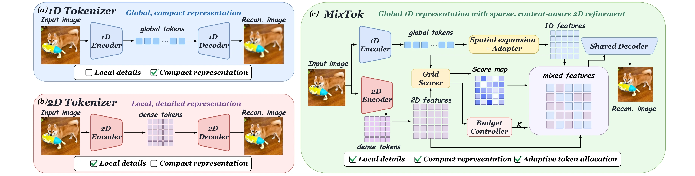
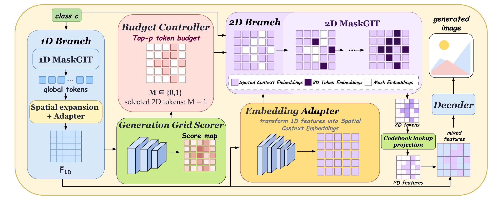

Global base
A short 1D token sequence is spatially expanded and aligned with the shared decoder’s feature space.
Adaptive visual tokenization
Global 1D Tokens with Sparse 2D Refinement
One image, two token geometries: a compact global sequence for structure, plus image-dependent local tokens where detail needs refinement.

Efficient visual tokenization requires compact representations without losing fine-grained image content. Dense grid tokenizers allocate capacity uniformly, while short 1D token sequences capture global structure but can miss local detail. MixTok combines both: a compact 1D representation is expanded into a base feature grid, and a content-adaptive router selects how many 2D tokens to retain and where to place them. Selected 2D features replace the corresponding base features before a shared decoder reconstructs the image.
The same representation supports two-stage masked generation. A 1D MaskGIT first generates global tokens; a distilled grid scorer chooses the sparse refinement set; a 2D MaskGIT then generates local tokens using continuous spatial context from the base representation. On ImageNet 256×256, MixTok reaches an rFID of 1.195 and a gFID of 1.9511 with average budgets of roughly 128 and 131 content tokens.

A short 1D token sequence is spatially expanded and aligned with the shared decoder’s feature space.
A grid scorer ranks candidate positions; top-p selection jointly determines the locations and per-image token count.
Selected 2D token features replace the aligned base features, and the shared decoder renders the mixed grid.

The Reconstruction Grid Scorer sees both feature branches and the base reconstruction. Its score distribution drives the Budget Controller, concentrating the available 2D tokens at locations with the largest expected refinement benefit.

During generation, the 2D branch is unavailable to the router. A Generation Grid Scorer distilled from its reconstruction counterpart predicts the refinement set from the base grid alone. An Embedding Adapter maps base features into spatial context embeddings for the sparse 2D MaskGIT.
MixTok is evaluated on ImageNet 256×256. Reconstruction uses all 50,000 validation images; generation gFID is averaged over four independent 50,000-image sampling runs.
| Tokenizer | Avg. tokens | rFID ↓ | PSNR ↑ |
|---|---|---|---|
| TiTok S-128 | 128 | 1.7222 | 17.72 |
| TiTok BL-128 VQ | 128 | 1.5063 | 19.83 |
| One-D-Piece L-256 | 128 | 1.4406 | 17.71 |
| FlexTok d18-d28 | 128 | 1.1422 | 16.76 |
| DetailFlow-16 | 128 | 1.1370 | 19.46 |
| MixTok | 128 | 1.1950 | 19.51 |
| Generator | Params | Tokens | Steps | gFID ↓ | Latency ↓ | FLOPs ↓ |
|---|---|---|---|---|---|---|
| AdaGen-MaskGIT-L | 206M | 256 | 16 | 2.4883 | 372.0 ms | 3.623 T |
| TiTok-S-128 | 295M | 128 | 64 | 1.9994 | 1018.4 ms | 9.949 T |
| Halton-MaskGIT-L† | 480M | 576 | 32 | 2.5143 | 591.5 ms | 26.690 T |
| One-D-Piece-L-256 | 177M | 256 | 16 | 2.4144 | 350.1 ms | 3.526 T |
| LPD-L-256 | 337M | 256 | 20 | 2.3863 | 215.5 ms | 0.879 T |
| LlamaGen-L | 343M | 256 | 256 | 3.6803 | 4951.8 ms | 0.599 T |
| DetailFlow-32 | 326M | 256 | 39 | 2.6315 | 669.9 ms | 5.627 T |
| MixTok | 321M | 130.66 | 8+8 | 1.9511 | 270.1 ms | 1.452 T |
Latency is median end-to-end generation time at batch size 1 on one RTX 5090, including RGB decoding. FLOPs are counted per image with multiply-add counted as two. †Halton-MaskGIT-L uses its native 384×384 output; other rows use 256×256.
faster than TiTok-S-128 under the measured single-image protocol.
faster than DetailFlow-32 while producing fewer content tokens.
masked sampling rounds in the main generation configuration.


Draft citation; replace the author field when the double-blind period ends.
@article{mixtok2026,
title = {MixTok: Adaptive Visual Tokenization with Global 1D Tokens
and Sparse 2D Refinement},
author = {Authors withheld during double-blind review},
year = {2026}
}